Why your support matters
Your investment goes far beyond program delivery. It helps us:
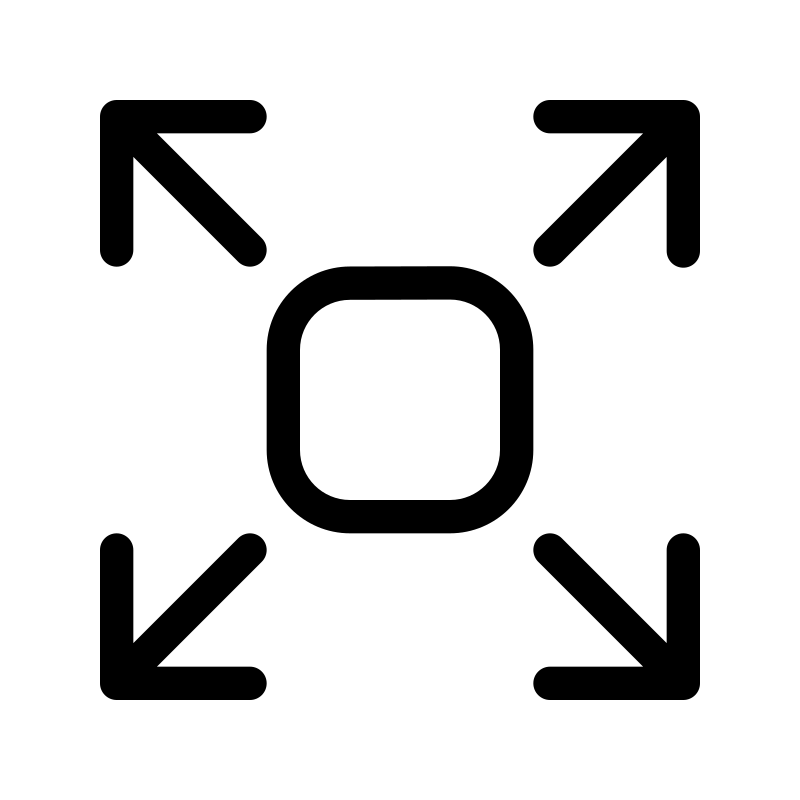
Scale Our Impact
Your investment helps us scale impact across diverse communities, reaching more young people who need it most.
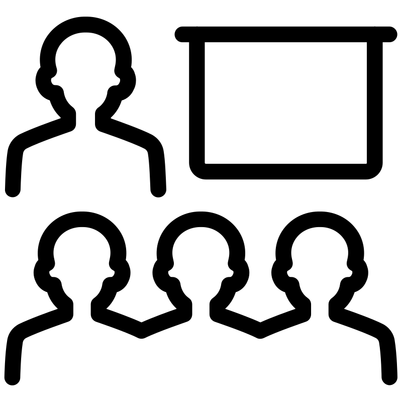
Train Educators
We train educators and caregivers to better support youth, creating a ripple effect of positive change.
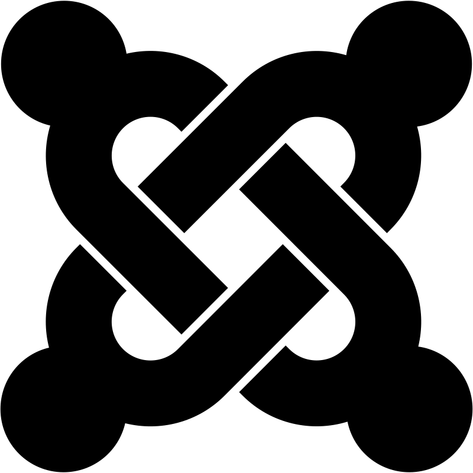
Build Inclusive Models
Help us build inclusive, evidence-based models that challenge outdated systems and create new paradigms for youth support.
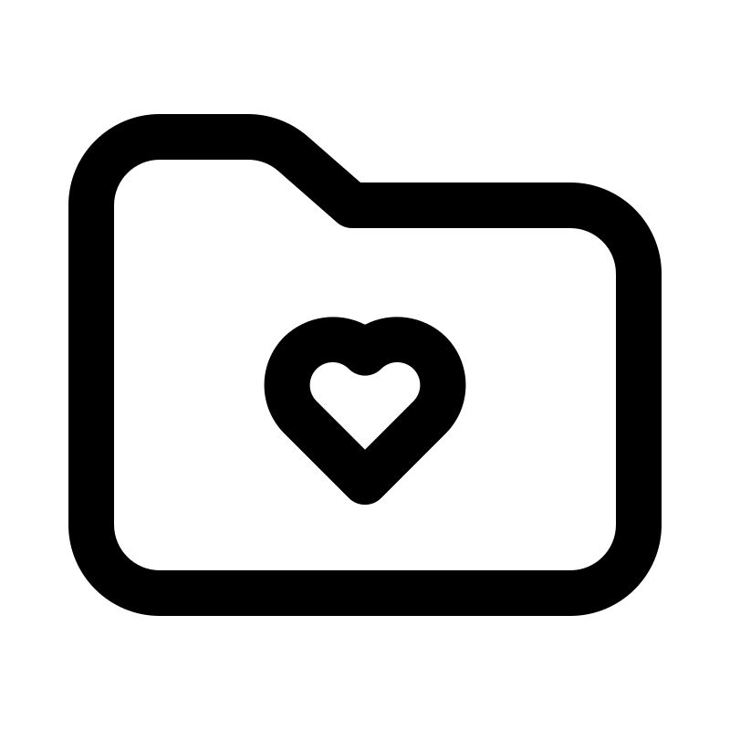
Create Safe Spaces
Most importantly, you help create spaces where young people feel seen, safe, and empowered to be their authentic selves.
Health institutions and specialised care centers
The 3 levels of commitment. The more the institution commits, the richer the restitution.
-
1
Host partnerFree of charge
The programme is funded by external contributors — NGOs, endowment funds, foundations — and offered free of charge to the institution which, in return, hosts and facilitates its field implementation and sustains the research.
Benefits for the institution
Field work with its young patients and their families, well-being sessions dedicated to the medical teams, and a first level of anonymised reporting on its own cohort.
-
2
Contributing partner
The institution is a host partner and contributes financially to the programme’s development on its premises.
Benefits for the institution
Everything in level 1, more in-depth field work, and studies of its cohort enriched by the Observatory’s data, delivered in preview before any external dissemination.
-
3
Commissioned studies
The institution commissions a study: the expression of its own data, centred on specific areas and enriched by the Observatory’s anonymised corpus.
Benefits for the institution
Everything in level 2, applied research, and the commissioned analysis in joint ownership with the NGO.
Complementary commitments and funding
Open to everyone who wishes to support the programme.
Research and development
Studies commissioned by external institutions
Research centres, universities and other partners commission studies on specific areas (oncology, neurology…). They usually do not contribute to more field data, but they enrich the research sets. Their access, always framed, bears only on strictly anonymised data, on the terms of an order. The generated revenues sustain the POSITIVE project over time and allow it to be offered to more host partners.
Donations and sponsoring
Endowment funds, foundations, associations, private donors.
Volunteering and internships
Skills offered to the programme, in the field or in support.
Ambassadors & spokespersons
Voices that carry the project to the public and to partners.
Ready to make a difference?
- Make an immediate impact with a single donation
- Become a sustaining partner in our mission
- Save with annual giving and maximize impact
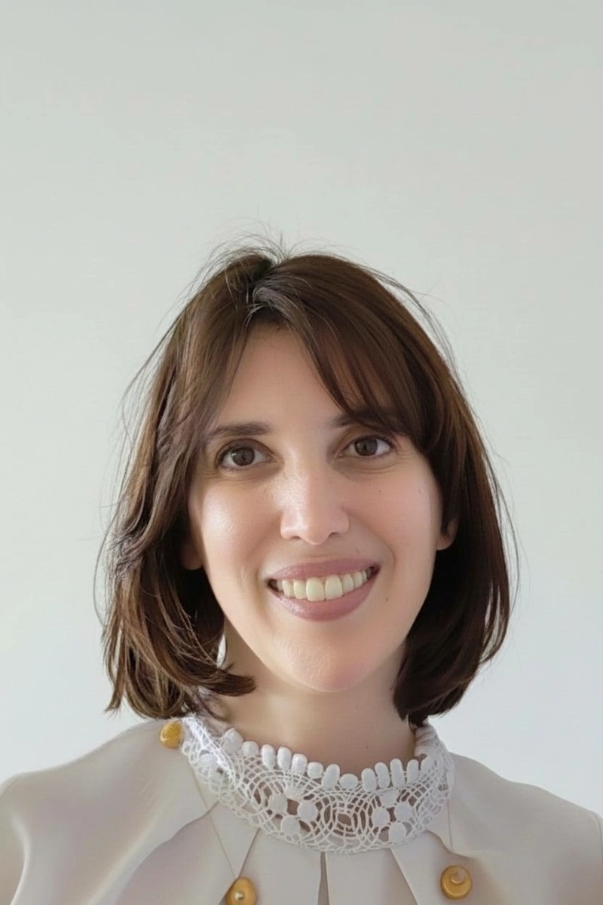
About the founder
Terry Moubayed FarahFounder & President
Terry Moubayed Farah is a Lebanese woman who grew up abroad, in France and the United States, and decided to come back to Lebanon in 2013 for her family, to raise her children close to their roots. In 2021 she founded Cocoon 4 Us, born in response to the deep needs of a country in crisis.
Cocoon 4 Us grew organically through the projects, partnerships and challenges that shaped its path. What began as an urgent response to support children and teenagers through uncertainty has crystallised into a clear vision: bridging education and wellness, and addressing children’s mental health in a way that connects mind and body. It equips children and teens with tools for self-awareness, confidence and emotional strength. Its programmes are never one-size-fits-all: they are tailored to each school, institution and community, and its monitoring tools make its findings and methods transparent, scalable and ready to be passed on. More than an initiative, it is a movement for positive change: a growing network of experts, educators and families working together to redefine children’s well-being. And all of it is fuelled by joy — not just a feeling but an ecosystem, both the spark and the ripple: when a child feels joy, that energy radiates outward, uplifting peers, teachers, families and communities.
In 2024 she created within Cocoon 4 Us the POSITIVE project, a para-medical programme of global well-being dedicated to young patients in hospitals and care centers. In June 2026 the programme became a Lebanese NGO, which she now presides.
“Find the key to each child’s heart, helping them reconnect mind & body, take the lead in their healing process and ultimately — in their life.”
Our partners
All together, corporate and non corporate partners, we create lasting impact for young lives.
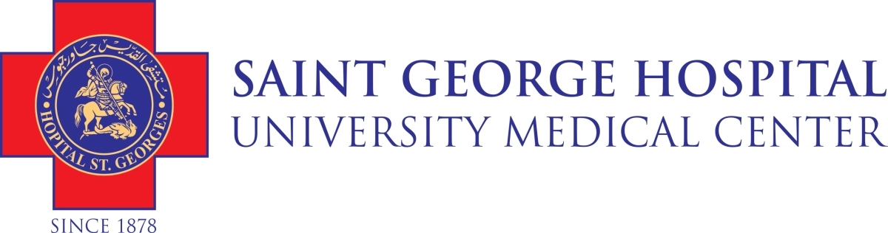
Saint George Hospital University Medical Center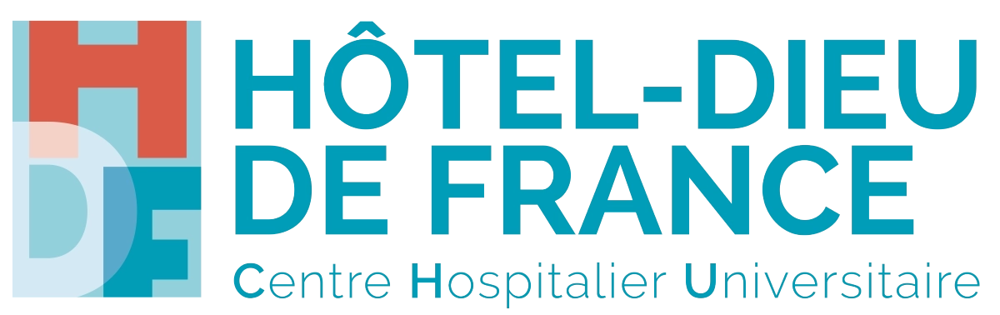
Hôtel-Dieu de France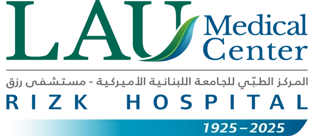
LAU Medical Center, Rizk Hospital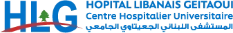
Lebanese Hospital Geitaoui
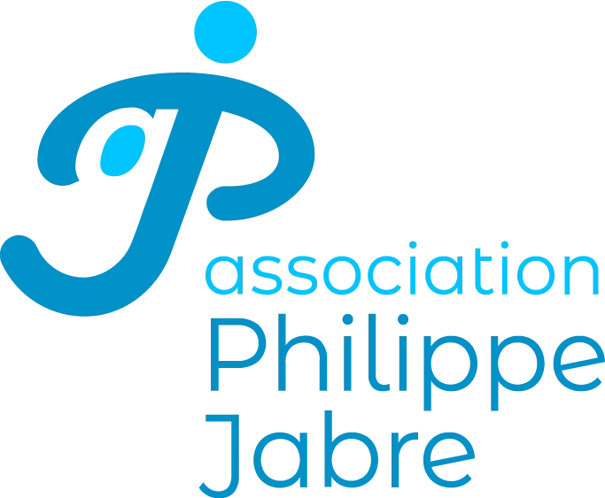
Association Philippe Jabre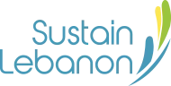
Sustain Lebanon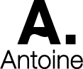
Antoine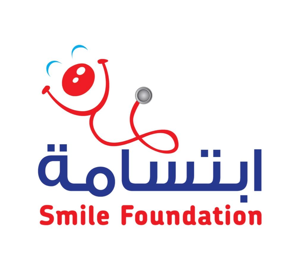
Ibtissama (Smile Foundation)
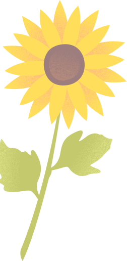
Take Action for Children in Hospitals & Care Centers
More engaged young patients today are healthier, more autonomous and more engaged adults tomorrow.